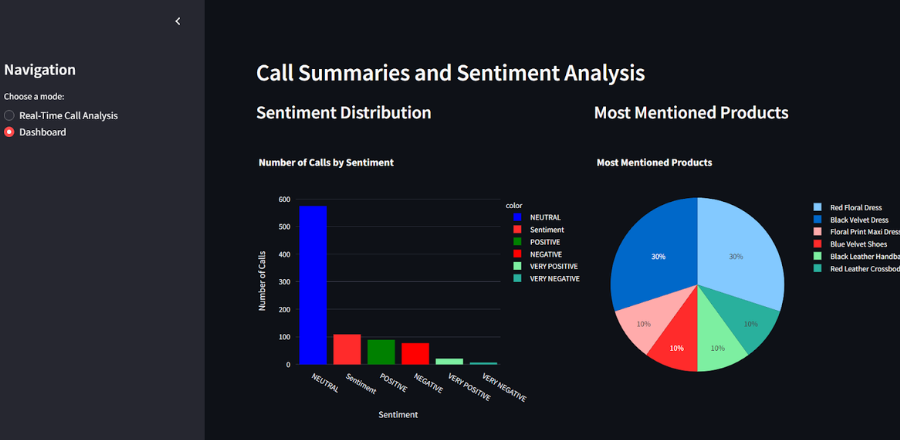
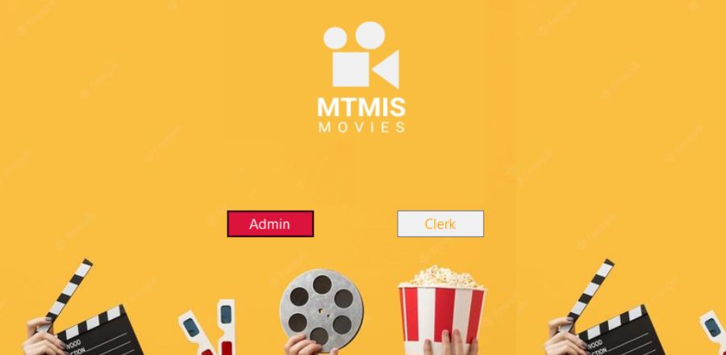

/ academic projects




I turn data into insights.
I'm a computer science engineering graduate from North-Eastern Hill University with a passion for machine learning and data science. I love discovering patterns in complex datasets and building intelligent systems that solve real-world problems.
Say hi!I am currently seeking opportunities as a Data Analyst or Data Scientist. I recently graduated with a Bachelor's degree in Computer Science from North-Eastern Hill University, India.
Here are some technologies I have been working with:
Outside of work, I enjoy painting, writing, and hiking. I'm also passionate about AI ethics and fairness in machine learning.
AUG 2021 - AUG 2025
OCT 2024 - JAN 2025
JUL 2024 - SEP 2024
MAR 2023 - MAR 2024
OCT 2021 - NOV 2021
Machine learning model that can automatically determine the sentiment of a product review based on its text.
Machine learning model to predict solar power generation, enabling smart home and building systems to optimize energy usage.
Customer segmentation for an e-commerce platform using an unsupervised machine learning approach.
Explores retail customer behavior and predicts purchasing pattern.
A practical tool that career counselors can use to provide deeper insights for their clients.